Capitolo 2
Esperimenti di Stern-Gerlach in cascata
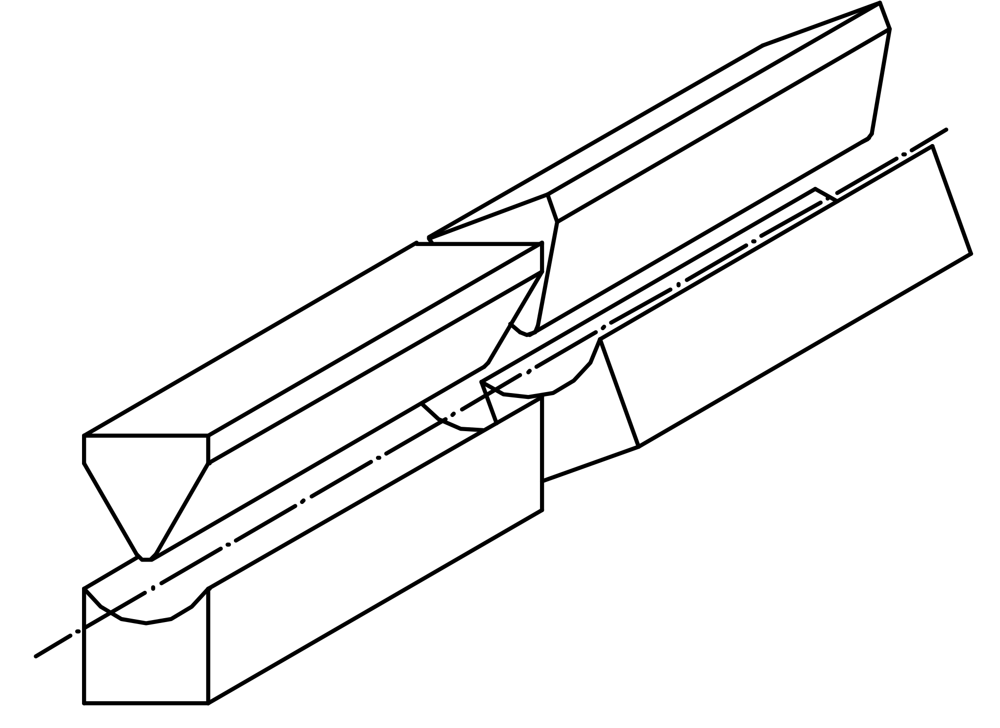
In questa scheda descriveremo una serie di esperimenti realizzati disponendo più macchine di Stern-Gerlach in cascata. I risultati di questi esperimenti ci porteranno ad introdurre le caratteristiche fondamentali della Meccanica Quantistica, e, nella parte finale, daremo una prima formulazione semplificata di questa teoria.Esperimento numero1.
Fig.1
(Vedi fig.1) Abbiamo due macchine di Stern-Gerlach in fila, una ha l’asse magnetico verticale, l’altra è inclinata rispetto alla verticale di un angolo ϑ.
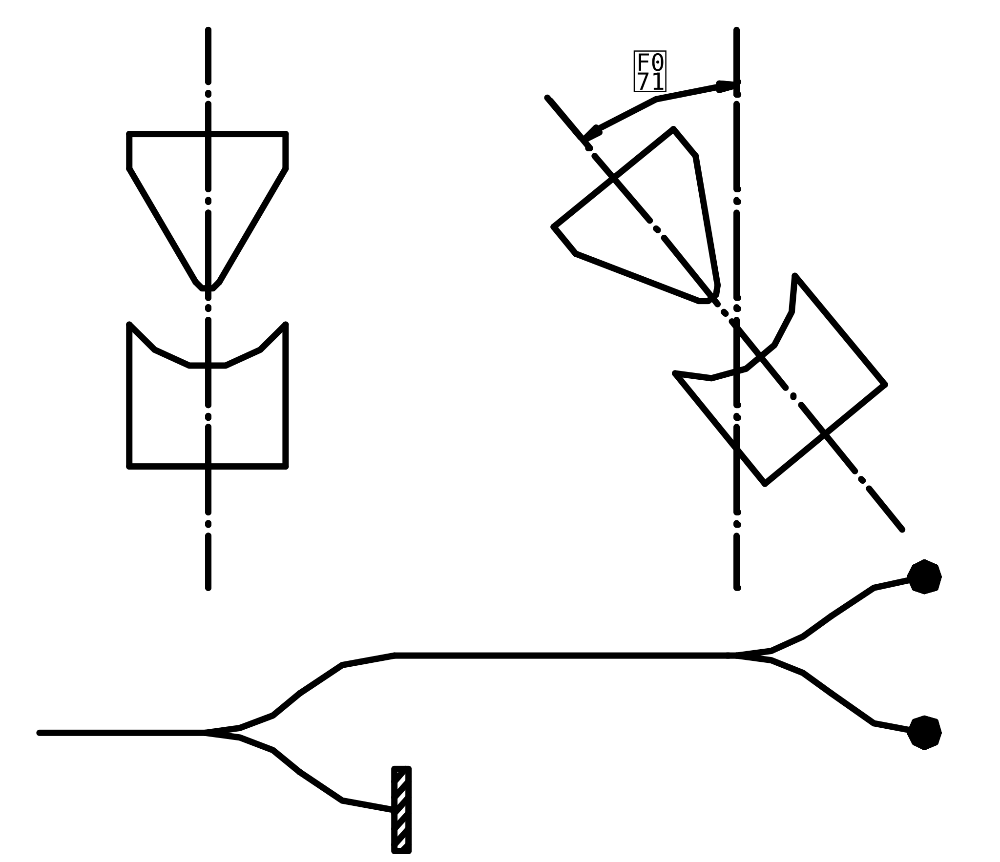
La prima macchina divide il fascio atomico in due parti, scriveremo che una parte ha momento magnetico m0=+k e l’altra m0=-k. Il pedice zero nel simbolo m0 rappresenta l’angolo di inclinazione della macchina, ad esempio se l’angolo è di 45° scriveremo m45. Il simbolo k rappresenta il valore assoluto del momento magnetico misurato che, come abbiamo visto nella scheda precedente è sempre uguale in ogni esperimento.La figura 2 mostra uno schema che rappresenta la disposizione delle macchine ed il percorso degli atomi. All’uscita della prima macchina viene bloccato il fascio con m0=-k e viene lasciato passare solo il fascio con m0=+k, diremo quindi che la prima macchina seleziona atomi con m0=+k.
Fig.2
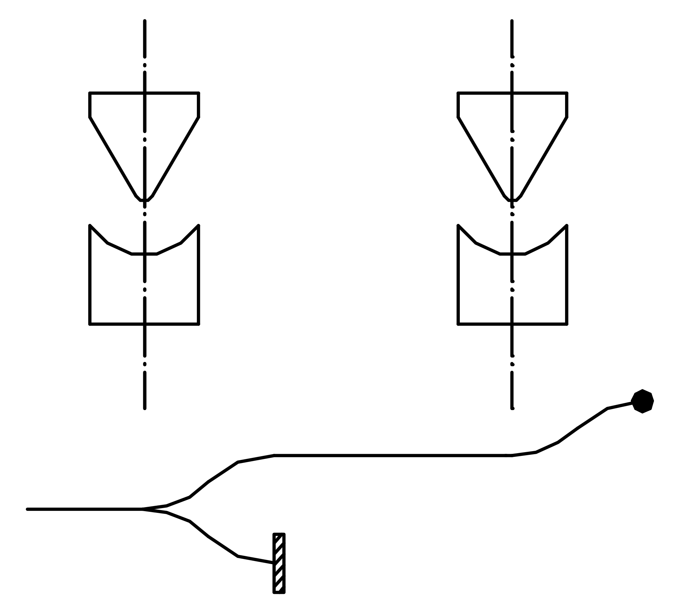
Il fascio con m0=+k, viene fatto passare nella seconda macchina e qui si divide di nuovo in due parti, mϑ=+k ed mϑ=-k. Le due frazioni in generale non sono uguali e si vede sperimentalmente che sono proporzionali ai termini .
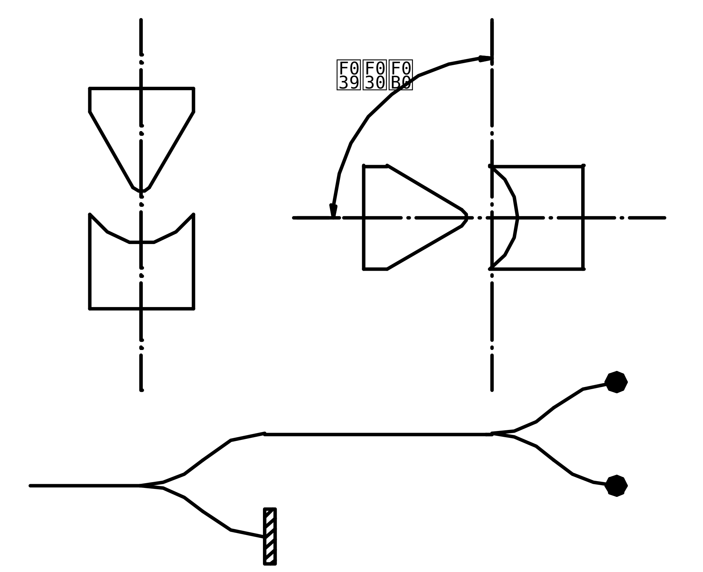
Fig.3
Ad esempio se anche la seconda macchina è disposta verticalmente (fig.3 ϑ=0°) allora abbiamo che i fasci mϑ=+k ed mϑ=-k hanno intensità proporzionali ai termini 1 e 0, cioè il fascio mϑ=+k ha tutta l’intensità ed il fascio mϑ=-k ha intensità zero. Se invece la seconda macchina è disposta a novanta gradi (fig.4 ϑ=90°) allora i fasci m90=+k e m90=-k hanno intensità proporzionali ai termini ½ ed ½, cioè sono uguali.
Fig.4
E’ interessante osservare che già questi primi risultati non si possono spiegare mediante i concetti della meccanica classica.
Se ruotiamo anche la prima macchina (fig.5) osserviamo che i risultati non cambiano sostanzialmente e, come era facile immaginare, i due fasci uscenti hanno intensità proporzionali ai termini
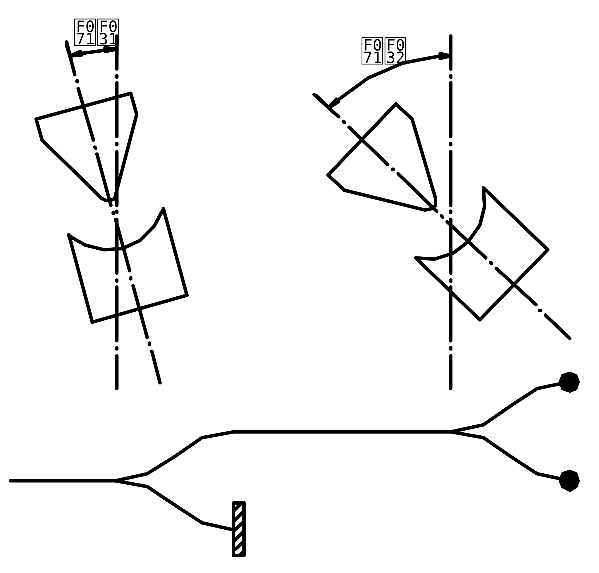
.Questo vuol dire che ciò che conta è solo l’inclinazione relativa tra le due macchine e non l’inclinazione assoluta rispetto al filo a piombo.
Fig.5
Esperimento numero 2.
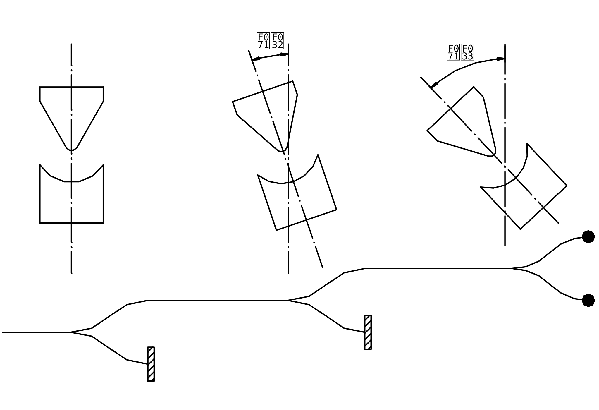
Fig.6
(Vedi fig.6) Abbiamo tre macchine. Consideriamo il fascio uscente dalla macchina due, questo fascio viene diviso dalla macchina tre in due parti di intensità proporzionali ai termini . Se si varia l’inclinazione della prima macchina osserviamo che varia l’intensità del fascio uscente dalla seconda macchina, ma non varia il modo in cui la terza macchina divide questo fascio, cioè non variano i rapporti tra le intensità dei fasci uscenti e l’intensità del fascio entrante alla terza macchina. Questo esperimento ci porta a concludere che gli atomi che escono dalla macchina due si trovano in uno stato fisico che è indipendente dall’orientamento della macchina uno. Indicheremo questo stato fisico dicendo che gli atomi si trovano nello stato mϑ2=+k.
Interpretazione probabilistica dei risultati.
In questo paragrafo daremo una possibile interpretazione di queste prime esperienza che abbiamo descritto.
Consideriamo il primo esperimento, la cui figura è riportata qui per comodità. Possiamo pensare che la macchina uno dispone gli atomi in un particolare stato fisico, che indicheremo con m0=+k. Se si esegue una misura di m0 su questi atomi, orientando la macchina due verticalmente, si ottiene con certezza il valore m0=+k. Se invece si esegue una misura di mϑ (con ϑ≠0) inclinando la macchina, si ottiene che ogni singolo atomo ha una probabilità di dare mϑ=+k, ed una probabilità di dare mϑ=-k.
In altre parole la nostra interpretazione suona così:
se, su un atomo che si trova nello stato m0=+k, si misura la grandezza mϑ (proiezione del momento magnetico nella direzione ϑ) si hanno due possibili risultati: mϑ=+k, con probabilità ed mϑ=-k con probabilità .
Secondo questa interpretazione il fascio uscente dalla prima macchina non è composto da una frazione di atomi con mϑ=+k ed un’altra con mϑ=-k, ma si tratta di atomi che si trovano tutti nello stato m0=+k ed ogni uno di loro, quando viene misurato mϑ, ha una certa probabilità di dare mϑ=+k ed un’altra di dare mϑ=-k.
Questo modo di vedere le cose, forse non è l’unico possibile, ma è sicuramente molto difficile immaginare un’altra visione che sia coerente con tutti i fatti che abbiamo descritto e che descriveremo.
A questo punto siamo arrivati a delineare una prima importante caratteristica della Meccanica Quantistica, quella legata alla probabilità. Quando si esegue una misura su un sistema fisico sono possibili diversi risultati, nel nostro caso due, ma possono essere anche di più o anche infiniti. Ogni possibile risultato ha una certa probabilità di verificarsi e la Meccanica Quantistica ci permetterà di calcolare queste probabilità.
Sovrapposizione degli stati.
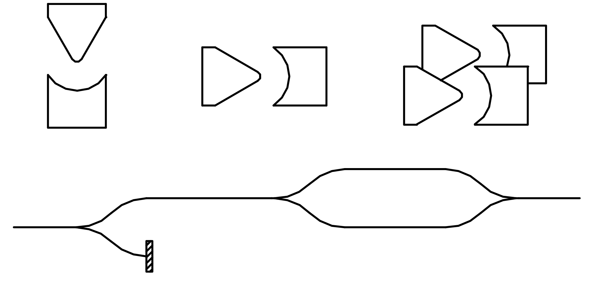
Fig.7
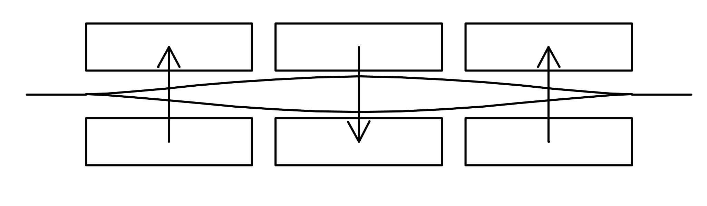
La figura 7 mostra che con due macchine di Stern-Gerlach è possibile sovrapporre due fasci che sono stati precedentemente separati da una prima macchina. Gli esperimenti di questo paragrafo si basano sulla sovrapposizione di due fasci.
Esperimento numero 3.
Fig.8
(Vedi fig.8) La prima macchina dispone gli atomi nello stato m0=+k, la seconda divide il fascio in due parti che hanno m90=+k ed m90=-k, le ultime due ricongiungono il fascio.
Si eseguono tre misure di m0 (fig.9).
Nel caso 1 misuriamo m0 su atomi nello stato m90=+k, quindi abbiamo le due possibilità m0=+k ed m0=-k con probabilità 0,5 e 0,5.
Nel caso 2 misuriamo m0 su atomi nello stato m90=-k abbiamo ancora le due possibilità m0=+k con probabilità 0,5 ed m0=-k con probabilità 0,5.
Fig.9
Nel caso 3 misuriamo m0 su atomi che si trovano in uno stato che è sovrapposizione degli stati m90=+k ed m90=-k. Il risultato è che si hanno le due possibilità m0=+k con probabilità 1 ed m0=-k con probabilità 0 zero, esattamente come se non ci fosse stata la scomposizione e la ricombinazione.
Riassumendo abbiamo:
La cosa da osservare è che sovrapponendo due stati che hanno probabilità 0,5 di dare m0=-k si ottiene uno stato che ha probabilità nulla di avere m0=-k,
0,5+0,5=0!
Quindi sovrapponendo gli stati le probabilità non si sommano. Ci chiediamo se c’è qualche altra entità matematica legata agli stati fisici che, quando si sovrappongono gli stati, si componga secondo una legge semplice, magari una legge di somma.
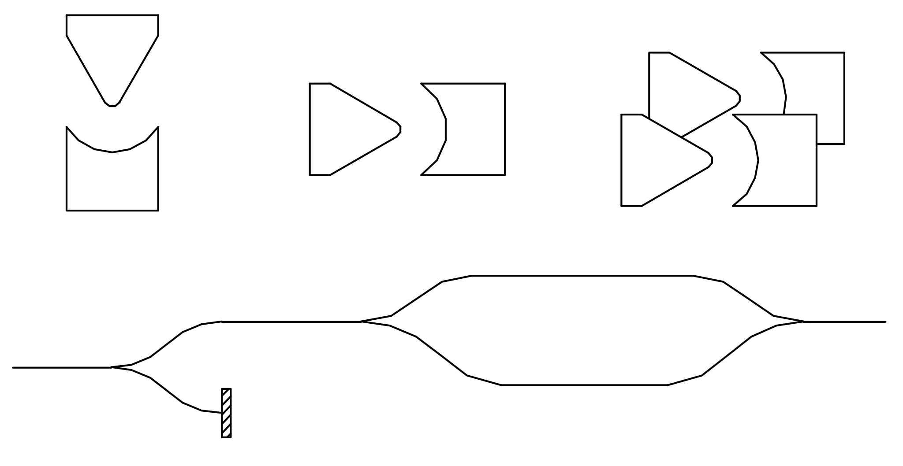
Esperimento numero 4.Fig.10
(Vedi fig.10) Questo esperimento è quasi identico al precedente, con l’unica differenza che il fascio con m90=-k percorre un cammino più lungo del fascio con m90=+k. Questo può essere realizzato con il sistema rappresentato schematicamente nella figura 11. Il fascio inferiore passa in una zona dove il gradiente di campo è più intenso, quindi curva di più e percorre un cammino più lungo.
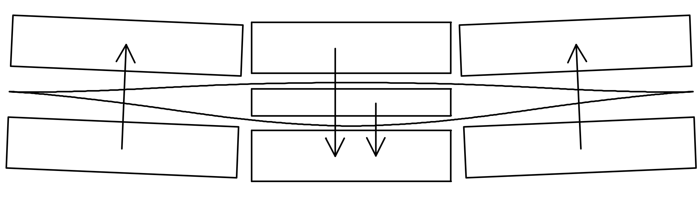
Vediamo quali sono i risultati al variare dello sfasamento ∆ tra i due cammini.Fig.11
Se lo sfasamento è nullo in uscita abbiamo lo stato m0=+k esattamente come nell’esperimento precedente, ma se lo sfasamento è diverso da zero abbiamo uno stato diverso. Se ∆ diviene pari ad una certa lunghezza caratteristica λ, in uscita abbiamo di nuovo m0=+k, anche se ∆ è multiplo di λ, ∆=2λ,3λ, ecc. abbiamo ancora lo stato m0=+k. Se ∆ è pari a λ/2 in uscita abbiamo lo stato m0=-k!
In generale per le probabilità abbiamo le seguenti formule:
dove abbiamo introdotto la variabile ϕ=2π∆/λ.
Ora facciamo i seguenti calcoli matematici.
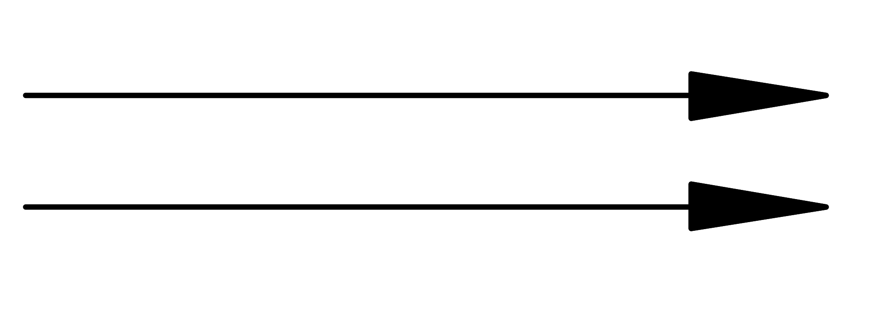
Prendiamo due numeri nel campo complesso, ad esempio due volte il numero uno, 1 e 1, rappresentiamoli vettorialmente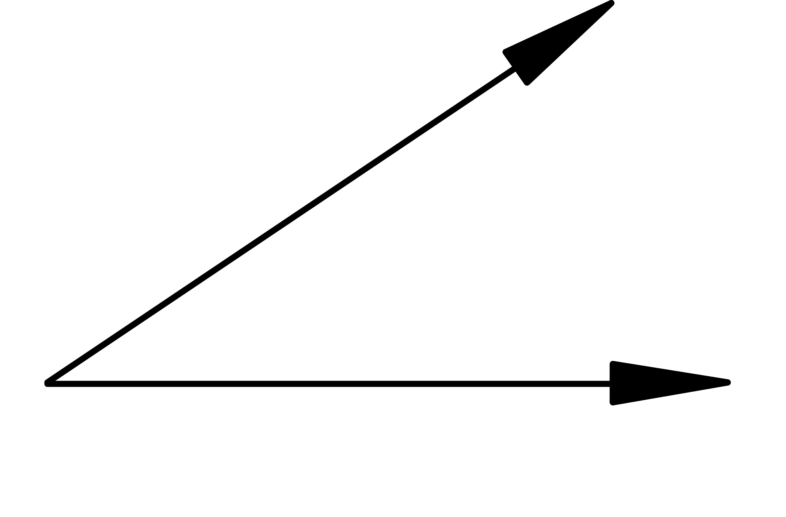
Ora sfasiamo il secondo numero moltiplicandolo per il fasore eiϕ , abbiamo la coppia 1 e eiϕ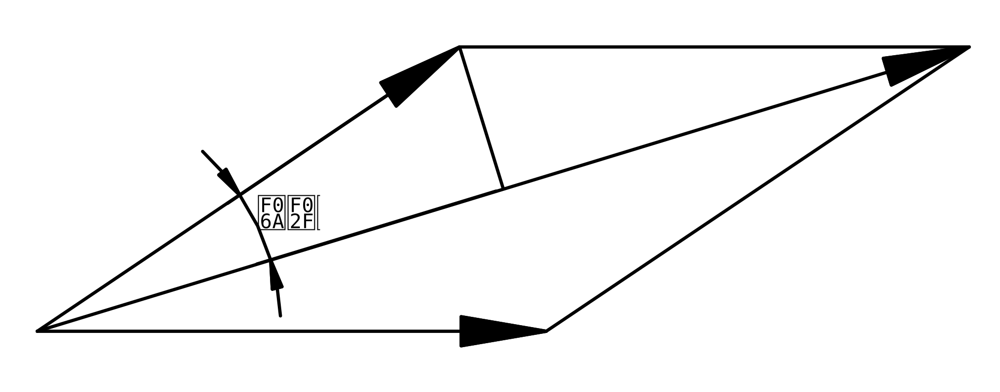
Sommiamo il risultato così ottenuto e prendiamone il modulo quadratoOtteniamo il risultato:
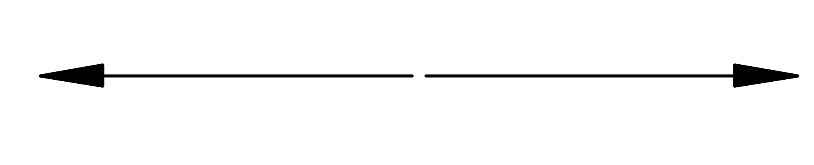
Ora ripetiamo il tutto partendo dai due numeri 1 e –1Sfasiamo il secondo numero di ϕ ottenendo 1 e - eiϕ
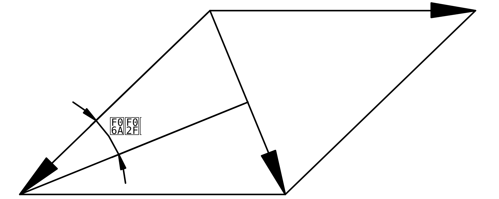
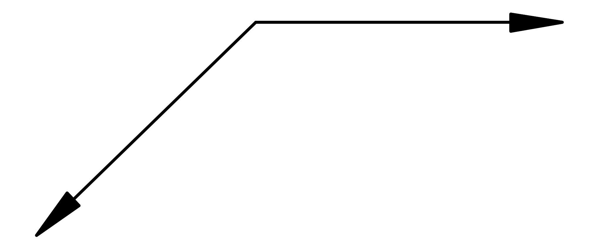
Sommiamo e prendiamone il modulo quadratoOtteniamo il risultato:
A questo punto sembra abbastanza chiaro che le probabilità ottenute sperimentalmente si possono vedere come il quadrato della somma di due numeri complessi. Il fattore 4 presente nei risultati non conta perché si può eliminare normalizzando la distribuzione di probabilità.
Ora possiamo organizzare le idee nel seguente modo.
Allo stato con m90=+k associamo due numeri complessi, il numero 1 che prendiamo dal primo calcolo ed un altro numero 1 che prendiamo dal secondo calcolo. Allo stato m90=-k associamo il secondo numero 1 del primo calcolo ed il numero –1 del secondo calcolo.
quando sfasiamo lo stato m90=-k moltiplichiamo i suoi due numeri per eiϕ
quando sovrapponiamo gli stati, sommiamo le corrispondenti coppie di numeri e lo stato risultante è rappresentato dalla somma
I moduli quadrati dei numeri trovati danno la distribuzione di probabilità di ottenere i valori m0=+k ed m0=-k quando si esegue una misura di m0..
Questi numeri si riferiscono ad una particolare grandezza fisica del sistema, nel nostro caso m0. Ogni singolo numero complesso è associato ad uno dei possibili valori che può assumere la grandezza fisica ed il modulo quadrato di questi numeri dà la probabilità che, eseguendo la misura, esca il valore associato.
Osserviamo che le coppie di numeri complessi che rappresentano lo stato del nostro sistema costituiscono uno spazio vettoriale, perché possono essere sommate e possono essere moltiplicate per un numero.
Gli esperimenti che abbiamo descritto ci hanno portato a pensare che per rappresentare gli stati fisici sia conveniente usare dei vettori complessi, perché queste entità si sommano semplicemente quando sovrapponiamo gli stati.
L’idea di usare dei vettori complessi per rappresentare gli stati si rivelerà molto fertile, infatti tutte le leggi della Meccanica Quantistica si scrivono come semplici equazioni lineari in termini di questi vettori. Prima di andare avanti con la teoria conviene dedicare un paragrafo all’algebra degli spazi vettoriali complessi.
Richiami di algebra degli spazi vettoriali complessi.
Preso un numero complesso c=a+ib indicheremo il suo complesso coniugato con il simbolo c*=a-ib (c* si legge “ci star”). Il prodotto cc*=a2+b2 è un numero reale positivo e viene chiamato modulo quadro di c.
Consideriamo ora un vettore colonna , possiamo definire il suo duale con il vettore riga . In questo modo il prodotto tra il vettore ed il suo duale
da un numero reale positivo che viene chiamato modulo quadro del vettore.
Se abbiamo uno stato fisico α, indicheremo il vettore ad
esso associato con il simbolo 
ed indicheremo il suo duale con il simbolo
I simboli e vengono chiamati rispettivamente bra e ket perché unendo questi nomi si ottiene la parola “braket” che in inglese vuol dire parentesi. Li abbiamo introdotti perché ci permettono di distinguere tra righe e colonne, e ci rendono molto chiara la lettura di espressioni in cui compaiono prodotti matriciali.
Ad esempio possiamo avere
oppure possiamo avere
Questi due prodotti sono completamente differenti, in un caso abbiamo un vettore riga per uno colonna ed otteniamo un numero, nell’altro caso abbiamo un vettore colonna per uno riga ed otteniamo una matrice.
Prodotto scalare.
Dati due vettori e il prodotto
viene chiamato prodotto scalare tra e .
Ricordiamo che nel campo reale il prodotto scalare tra due vettori reali e viene definito senza il complesso coniugato:
Osserviamo, prima di tutto, che le due definizioni sono compatibili, perché il complesso coniugato di un numero reale è il numero stesso a*=a. Quindi la definizione data nel campo complesso si riduce a quella data nel campo reale se i vettori a cui si applica sono reali.
Tuttavia può rimanere un dubbio, perché nel campo complesso non definiamo il prodotto scalare semplicemente senza il complesso coniugato
?
La risposta è molto semplice, questa definizione non gode di alcune
proprietà molto importanti. Ad esempio, con questa definizione il
prodotto di un vettore per se stesso non è detto che
sia un numero reale quindi si perde il concetto di modulo. Inoltre in
alcuni casi il prodotto potrebbe essere
nullo senza che il vettore sia nullo, ad
esempio se
abbiamo
invece con la definizione corretta
Per concludere questa digressione vediamo quali sono le proprietà fondamentali del prodotto scalare in uno spazio complesso:
Decomposizione di vettori.
per definizione diremo che due vettori e sono ortogonali
se è nullo il loro prodotto scalare
Teorema: se n vettori non nulli sono a due a due ortogonali
allora questi n vettori sono linearmente indipendenti, cioè nessuno di loro può essere ottenuto come combinazione lineare degli altri.
Dimostrazione: per assurdo supponiamo che un vettore, ad esempio il primo, è combinazione degli altri
moltiplichiamo scalarmente a destra per
essendo i vettori per ipotesi ortogonali, abbiamo che tutti i termini al secondo membro sono nulli, quindi
ma questo è assurdo perché i vettori sono tutti non nulli.
Ora supponiamo di avere uno spazio vettoriale n
dimensionale, e di dover scegliere una base per questo spazio. Come è
noto, si può scegliere una qualsiasi n-upla di vettori
linearmente indipendenti, ma è molto comodo scegliere questi vettori in
modo che siano ortogonali tra di loro ed in modo che abbiano modulo
unitario .
Infatti così facendo diventa molto semplice calcolare le componenti di
un generico vettore  . Vediamo
come:
. Vediamo
come:
Prendiamo un vettore ed una base di
vettori ortogonali di modulo unitario
può
essere scritto come combinazione lineare dei vettori
per calcolare il coefficiente ck moltiplichiamo questa espressione a sinistra per
essendo i vettori di base a due a due ortogonali si ha
essendo di modulo unitario abbiamo
Quindi ci rimane la formula per calcolare ck
la componente di  lungo il vettore
di base
lungo il vettore
di base  è
data dal prodotto scalare tra questi due vettori.
è
data dal prodotto scalare tra questi due vettori.
L’algebra degli spazi vettoriali complessi ha molti altri sviluppi di cui ci occuperemo più avanti. Per ora abbiamo voluto introdurre il prodotto scalare perché ci è indispensabile per formulare una prima versione semplificata della Meccanica Quantistica.
Ritorniamo al nostro semplice sistema.
Lo stato m0=+k è caratterizzato dal fatto che se si esegue una misura di m0 si ottiene con certezza il valore m0=+k, cioè la probabilità di ottenere m0=+k è uno e la probabilità di ottenere m0=-k è zero.
Quindi questo stato può essere rappresentato dal vettore ket
In questa scelta abbiamo un certo grado di libertà, infatti le probabilità sono il modulo quadrato delle componenti. Quindi anche i vettori oppure vanno bene, perché . Questo grado di libertà deve essere visto come in meccanica classica si vede la scelta del sistema di riferimento, è del tutto indifferente quale scelta facciamo, quindi conviene fare quella più comoda.
Per lo stato m0=-k vale un discorso analogo
Osserviamo che i vettori che abbiamo scelto sono ortogonali ed hanno modulo unitario
Consideriamo ora uno stato α ottenuto da una combinazione degli stati m0=+k ed m0=-k
Possiamo dire che questo stato ha proprietà intermedie a quelle degli
stati componenti, nel senso che, se si misura m0 si
hanno i due valori possibili m0=+k ed
m0=-k con probabilità proporzionali ai termini e 
Per ottenere le probabilità effettive dobbiamo normalizzare la distribuzione
Se moltiplichiamo i due numeri α+ ed α- per uno stesso numero complesso c
abbiamo la distribuzione
normalizzando otteniamo esattamente le stesse probabilità di prima
Questo è coerente con il fatto che in Meccanica Quantistica i vettori
rappresentano la stessa combinazione degli stati base e, quindi, lo stesso stato fisico. Scegliere l’uno o l’altro vettore è del tutto indifferente.
La scelta più comoda è quella di prendere vettori normalizzati, cioè vettori tali che . In questo modo le probabilità si ottengono direttamente dai moduli quadri, senza dover normalizzare
Quindi d’ora in poi, rappresentiamo gli stati con vettori di modulo unitario. Ai coefficienti di un vettore di stato con modulo unitario viene dato un nome particolare, vengono chiamati “ampiezze di probabilità”, α+ è l’ampiezza di probabilità di ottenere m0=+k e è la probabilità di ottenere m0=+k, analogamente per α- e per .
Consideriamo ora due stati mϑ=+k e mϕ=+k, e consideriamo i vettori che li rappresentano
le grandezze αϑ+, αϑ- e αϕ+, αϕ- sono, rispettivamente, le ampiezze di probabilità di trovare m0=+k ed m0=-k quando il sistema si trova negli stati mϑ=+k e mϕ=-k.
Ma quanto vale l’ampiezza di probabilità di trovare mϑ=+k misurando mϑ su atomi che si trovano nello stato mϕ=+k?
L’ampiezza di probabilità cercata è pari al prodotto
cioè è pari alla componente del vettore lungo il vettore .
La probabilità, come al solito, è data dal modulo quadro
Questa regola era facile da intuire, ma non si può dimostrare in base alle cose che avevamo già detto. Si tratta di un principio fondamentale della Meccanica Quantistica, ed ha una validità generale:
supponiamo di avere un sistema in uno stato α e di voler sapere la probabilità che, misurando una grandezza g, esca un particolare valore .
Prima dobbiamo prendere il ket normalizzato associato allo
stato α.
Poi dobbiamo prendere il ket normalizzato associato allo stato nel quale, se si misura g, si ottiene con certezza il valore .
Infine dobbiamo calcolare la componente del ket lungo il ket
ottenendo così l’ampiezza di probabilità.
La probabilità è data dal modulo quadrato
Ora siamo in grado di scegliere le giuste componenti dei vettori e per ogni angolo ϑ.
Per le probabilità relative a abbiamo i seguenti risultati sperimentali
che, ad esempio possono derivare dai vettori
Anche in questo caso abbiamo un certo grado di libertà, questo perché non possiamo misurare direttamente le ampiezze di probabilità, ma solo le probabilità. La scelta più semplice è la seguente
Per lo stato possiamo scegliere
Il segno meno davanti al è necessario perché i due vettori devono essere ortogonali . Infatti sappiamo che la probabilità di ottenere mϑ=+k nello stato mϑ=-k è zero.
A questo punto, per verificare la coerenza delle cose che abbiamo detto, proviamo a calcolare la probabilità di trovare mϑ=+k in uno stato mϕ=+k.
Analogamente si può calcolare
Esattamente in accordo con i risultati sperimentali.
Come ultimo passo ci resta da studiare l’evoluzione temporale dei vettori di stato.
Evoluzione temporale.
Dato un sistema, supponiamo di conoscere il ket di stato iniziale e le “condizioni ambientali”. Ci chiediamo quale sarà il ket di stato in un generico istante t.
Possiamo organizzare un esperimento nel seguente modo:
prendiamo un fascio di atomi di cui conosciamo lo stato, lo facciamo passare attraverso unna scatola contenente varie macchine di Stern-Gerlach e, all’uscita dopo il tempo necessario all’attraversamento della scatola, osserviamo lo stato degli atomi (vedi fig.12).
Fig.12
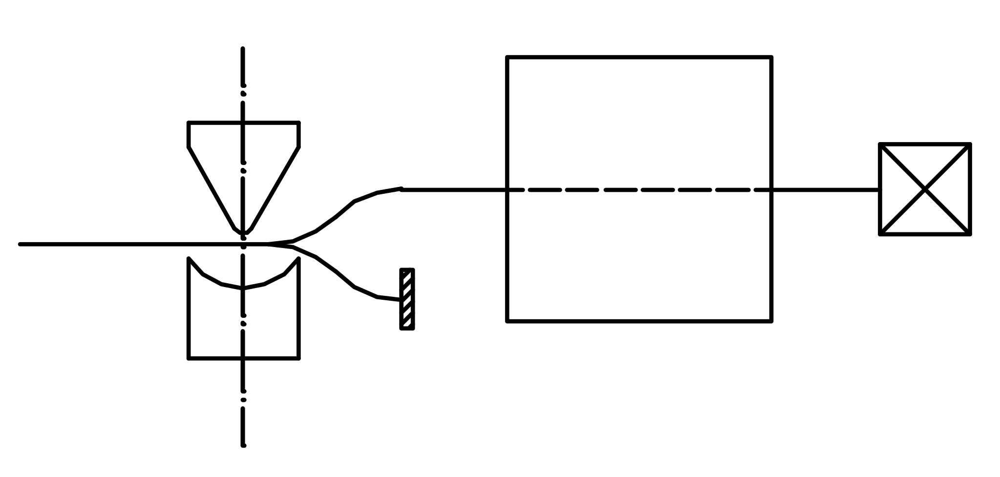
Scatola
Nel predisporre la scatola dobbiamo stare attenti, infatti noi stiamo studiando un sistema semplificato, abbiamo degli atomi dei quali osserviamo solo il momento magnetico, e nessun’altra grandezza come ad esempio la posizione. Quindi non si possono inserire setti che bloccano alcuni fasci, perché lo stato degli atomi che urtano questi setti si dovrebbe descrivere anche in termini di posizione oltre che di momento magnetico, e questo ci porterebbe fuori dallo schema semplice che stiamo studiando.
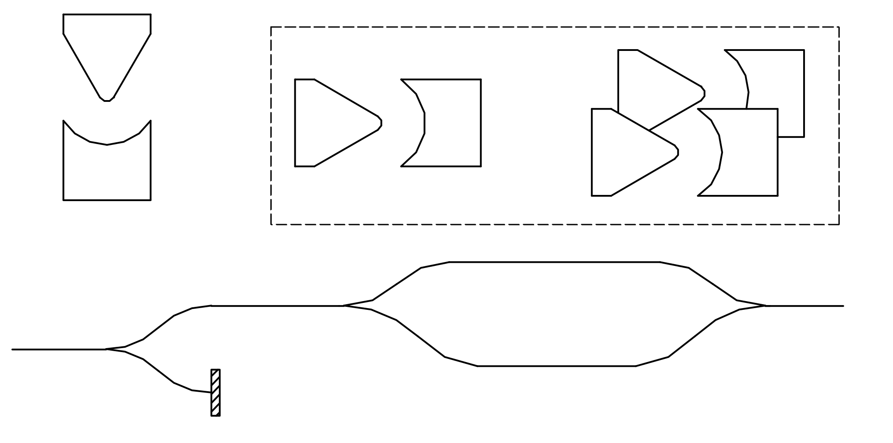
Possiamo considerare un esperimento che abbiamo già eseguito (Esperimento numero 4) di cui riportiamo la figura.Esperimento n.4
Supponiamo di poter ruotare la prima macchina di un angolo ϑ, così in ingresso abbiamo atomi nello stato . Quando questi atomi entrano nella scatola lo stato viene diviso in due componenti
dove i termini c+ e c- sono dati dai prodotti scalari
Il fascio viene sfasato di un fattore eiϕ ed in uscita abbiamo lo stato composto
dove U è la matrice
Questa matrice viene detta matrice di evoluzione temporale tra gli istanti t0 e t, e si riferisce al particolare ambiente, cioè all’apparato che costituisce l’esperimento.
In generale per qualsiasi fenomeno esiste una matrice  tale che dato
si calcola
tale che dato
si calcola
 con il
prodotto .
con il
prodotto .
Un’importante proprietà della matrice di evoluzione temporale è che conserva i prodotti scalari. Cioè se prendiamo due vettori di stato e , e prendiamo i vettori ottenuti dall’evoluzione di questi
i prodotti scalari tra i primi e tra i secondi sono uguali

Possiamo verificare questa proprietà per il caso particolare dell’esperimento 4, prima però vediamo un dettaglio di algebra:
Se prendiamo un vettore  il suo duale è
il suo duale è
 . Se
moltiplichiamo per un numero
c abbiamo , ed il duale
sarà .
Dunque il duale di è .
. Se
moltiplichiamo per un numero
c abbiamo , ed il duale
sarà .
Dunque il duale di è .
Ora calcoliamo e mostriamo che il risultato è uguale a .
eseguendo il prodotto scalare ed eliminando i termini nulli
Per concludere rivediamo i principi fondamentali che abbiamo individuato.
Principi della Meccanica Quantistica (versione semplificata).
Un sistema fisico è caratterizzato dalle sue grandezze fisiche che possono essere misurate.
Quando si misura una grandezza g sono possibili diversi risultati, ed ogni risultato ha una certa probabilità di uscire. Se dalla misura si ottiene un particolare risultato
 , il sistema si
porta in uno stato tale che, se si ripete la misura di g si
ottiene con certezza il valore . Un tale stato
viene detto autostato di g con autovalore
, il sistema si
porta in uno stato tale che, se si ripete la misura di g si
ottiene con certezza il valore . Un tale stato
viene detto autostato di g con autovalore  .
.Un qualsiasi altro stato α può essere considerato come una sovrapposizione degli autostati di una grandezza g e può essere rappresentato da un vettore di numeri complessi
 . Ogni numero
complesso è associato ad uno dei possibili valori che può assumere la
grandezza g, Il modulo
quadrato di ognuno di questi numeri complessi, ad esempio
αk, da la probabilità che misurando la grandezza
g esca il particolare valore associato al
numero considerato.
. Ogni numero
complesso è associato ad uno dei possibili valori che può assumere la
grandezza g, Il modulo
quadrato di ognuno di questi numeri complessi, ad esempio
αk, da la probabilità che misurando la grandezza
g esca il particolare valore associato al
numero considerato.In generale se il sistema si trova in uno stato α e si misura una grandezza
 , la probabilità
che esca
, la probabilità
che esca  è
data dal modulo quadro del prodotto scalare tra il vettore ed il vettore
è
data dal modulo quadro del prodotto scalare tra il vettore ed il vettore
 associato
all’autostato di .
associato
all’autostato di . L’evoluzione nel tempo di uno stato αt segue una legge lineare

dove
Questi che abbiamo sintetizzato sono una versione semplificata dei principi fondamentali. In generale per descrivere lo stato di un sistema non è sufficiente usare una sola grandezza osservabile, ma bisognerà usarne più di una. Nel seguito mostreremo come si generalizza la teoria ai casi più complessi, ed affronteremo l’importante problema di determinare la matrice di evoluzione temporale per i vari sistemi che studieremo.